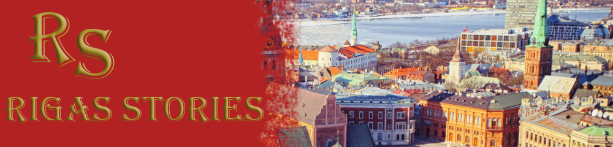

|  |
|
Столица Латвии Рига является жемчужиной не только Латвии, но и всей Балтии. Рига включена в список Всемирного культурного и природного наследия ЮНЕСКО. Она расположена в средней части страны, на южном побережье Рижского морского залива, в устье нашей крупнейшей реки Даугавы. В Риге проживает более 700 тысяч жителей, что делает ее крупнейшим городом в странах Балтии. Рига – великолепный туристический пункт, куда можно отправиться на выходные дни, чтобы получить новые впечатления и отдохнуть. Каждое столетие оставляет в ее чертах свои следы. Это можно заметить в архитектуре – в Вецриге и в центре города. Культурное наследие гармонично уживается с современным стремительным темпом. Ригу называют жемчужиной архитектуры – город, где в одном месте можно осмотреть церкви, построенные во времена зарождения города, средневековые здания в старом городе, уникальные образцы югендстиля, а также деревянную архитектуру, пережившую века. Причины посетить Ригу:
|
|
Last Updated: 16.12.2017 |